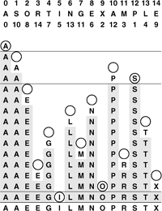

C++ Programming Robert Sedgewick - Princeton University Addison Wesley Professional Algorithms in C++, Parts 1–4: Fundamentals, Data Structure, Sorting, Searching, Third Edition C++ Programming Robert Sedgewick - Princeton University Addison Wesley Professional Algorithms in C++, Parts 1–4: Fundamentals, Data Structure, Sorting, Searching, Third Edition
6.8. Index and Pointer Sorting
The development of a string data type implementation similar to Programs 6.9 and 6.10 is of particular interest, because character strings are widely used as sort keys. Moreover, since strings are variable-length and can be very long, constructing, deleting, and comparing strings can be very expensive, so we have to take particular care to ensure that our implementation does not lead to excessive and unneccesary use of these operations.
To this end, we use a data representation that consists of a pointer (to an array of characters), the standard C-style string representation. Then, we can change the first line in Program 6.9 to
typedef struct { char *str; } Item;
to convert it to an interface for strings. We put the pointer in a struct because C++ does not allow us to overload operator< for built-in types such as pointers. This kind of situation is not unusual in C++: A class (or struct) that adjusts the interface to another data type is called a wrapper class. Even though we are asking very little of the wrapper class in this case, a more complicated implementation might be worthwhile in some situations. We will consider another example soon.
Program 6.11 is an implementation for string items. The overloaded operator< is easily implemented with the C library string-comparison function, but the implementation of scan (and rand) is more challenging because we must be aware of the allocation of memory for the strings. Program 6.11 uses the method that we examined in Chapter 3 (Program 3.17), maintaining a buffer in the data-type implementation. Other options are to allocate memory dynamically for each string, to use a class implementation like String in the Standard Template Library, or to keep the buffer in the client program. We can use any of these approaches (with corresponding interfaces) to sort strings of characters, using any of the sort implementations that we have been considering.
We are faced with memory-management choices of this kind any time that we modularize a program. Who should be responsible for managing the memory corresponding to the concrete realization of some type of object: the client, the data-type implementation, or the system? There is no hard-and-fast answer to this question (some programming-language designers become evangelical when the question is raised). Some modern programming systems (including some C++ implementations) have general mechanisms for dealing with memory management automatically. We will revisit this issue in Chapter 9, when we discuss the implementation of a more sophisticated abstract data type.
Program 6.11 is an example of a pointer sort, which we shall consider in more generality shortly. Another simple approach for sorting without (intermediate) moves of items is to maintain an index array with keys in the items accessed only for comparisons. Suppose that the items to be sorted are in an array data[0], . . ., data[N-1], and that we do not wish to move them around, for some reason (perhaps they are huge). To get the effect of sorting, we use a secondarray a of item indices. We begin by initializing a[i] to i for i = 0, . . ., N-1. That is, we begin with a[0] having the index of the first data item, a[1] having the index of the second data item, and so on. The goal of the sort is to rearrange the index array a such that a[0] gives the index of the data item with the smallest key, a[1] gives the index of the data item with the second smallest key, and so on. Then we can achieve the effect of sorting by accessing the keys through the indices—for example, we could print out the array in sorted order in this way.
Program 6.11. Data-type implementation for string items|
This implementation allows us to use our sorting programs to sort C strings. For the data representation, we use a structure that contains a pointer to a character (see text), so a sort will process an array of pointers to characters, rearranging them so the indicated strings are in alphanumeric order. To clearly illustrate the memory management process, we define a storage buffer of a fixed size containing the string characters in this module; dynamic allocation is perhaps more appropriate. The implementation of rand is omitted.
#include <iostream.h>
#include <stdlib.h>
#include <string.h>
#include "Item.h"
static char buf[100000];
static int cnt = 0;
int operator<(const Item& a, const Item& b)
{ return strcmp(a.str, b.str) < 0; }
void show(const Item& x)
{ cout << x.str << " "; }
int scan(Item& x)
{ int flag = (cin >> (x.str = &buf[cnt])) != 0;
cnt += strlen(x.str)+1;
return flag;
}
|
We need to specify that our sorts will be processing array indices, not just ordinary integers. Our goal is to define a type Index so that we can overload operator<, as follows:
int operator<(const Index& i, const Index& j)
{ return data[i] < data[j]; }
If we have an array a of objects of type Index, then any of our sort functions will rearrange the indices in a to make a[i] specify the number of keys that are smaller than data[i] (the index of a[i] in the sorted array). (For simplicity, this discussion assumes that the data are keys, rather than full items—we can use the same principle for larger, more complicated items, by modifying operator< to access specific keys in the items, or to use a class member function to compute the key.) To define Index, we use a wrapper class:
struct intWrappper
{
int item;
intWrapper(int i = 0)
{ item = i; }
operator int() const
{ return item; }
};
typedef intWrapper Index;
The constructor in this struct converts any int to an Index and the cast operator int() converts any Index back to an int, so we can use objects of type Index anywhere that we can use objects of built-in type int.
An example of indexing, with the same items sorted by two different keys, is shown in Figure 6.14. One client program can define operator< to use one key and another client program can define operator< to use another key, but both can use the same sort program to produce an index array that allows them to access the items in order of their respective keys.
By manipulating indices, rather than the records themselves, we can sort an array simultaneously on several keys. For this sample data that might represent students'names and grades, the second column is the result of an index sort on the name, and the third column is the result of an index sort on the grade. For example, Wilson is last in alphabetic order and has the tenth highest grade, while Adams is first in alphabetic order and has the sixth highest grade. A rearrangement of the N distinct nonnegative integers less than N is called a permutation in mathematics: an index sort computes a permutation. In mathematics, permutations are normally defined as rearrangements of the integers 1 tHRough N; we shall use 0 through N – 1 to emphasize the direct relationship between permutations and C++ array indices.
This index-array approach to indirection will work in any programming language that supports arrays. Another possibility is to use pointers, as in the string data-type implementation that we just considered (Program 6.11). For sorting an array of fixed-size items, a pointer sort is essentially equivalent to an index sort, but with the address of the array added to each index. But a pointer sort is much more general than an index sort, because the pointers could point anywhere, and the items being sorted do not need to be fixed in size. As is true in index sorting, if a is an array of pointers to keys, then a call to sort will result in the pointers being rearranged such that accessing them sequentially will access the keys in order. We implement comparisons by following pointers; we implement exchanges by exchanging the pointers.
The standard C library sort function qsort is a pointer sort (see Program 3.17) which takes its comparison function as an argument (rather than relying on overloaded operator<, as we have been doing). The function takes four arguments: the array; the number of items to be sorted; the size of the items; and a pointer to a function that compares two items, given pointers to them. For example, if Item is char*, then the following code implements a string sort that adheres to our conventions:
int compare(void *i, void *j)
{ return strcmp(*(Item *)i, *(Item *)j); }
void sort(Item a[], int l, int r)
{ qsort(a, r-l+1, sizeof(Item), compare); }
Program 6.12. Data-type interface for record items|
The records have two keys: a string key (for example, a name) in the first field, and an integer key (for example, a grade) in the second field. We consider these records too large to copy, so we define Item to be a struct containing a pointer to a record.
struct record { char name[30]; int num; };
typedef struct { record *r; } Item;
int operator<(const Item&, const Item&);
void rand(Item&);
void show(const Item&);
int scan(Item&);
|
The underlying algorithm is not specified in the interface, but quicksort (see Chapter 7) is widely used. In Chapter 7 we shall consider many of the reasons why this is true. We also, in this chapter and in Chapters 7 through 11, develop an understanding of why other methods might be more appropriate for some specific applications, and we explore approaches for speeding up the computation when the sort time is a critical factor in an application.
In typical applications, the pointers are used to access records that may contain several possible keys. For example, records consisting of students' names and grades or people's names and ages might be defined by
struct record { char[30] name; int num; }
and we might wish to sort them using either of the fields as key. Programs 6.12 and 6.13 provide an example of a pointer sort interface and implementation that can allow us to do so. We use an array of pointers to records and provide different implementations of operator< for different sort applications. For example, if we compile Program 6.13 together with a file containing
#include "Item.h"
int operator<(const Item &a, const Item &b)
{ return a.r->num < b.r->num; }
then we get a data type for the items for which any of our sort implementations will do a pointer sort on the integer field; and if we compile Program 6.13 together with a file containing
#include "Item.h"
#include <string.h>
int operator<(const Item &a, const Item &b)
{ return strcmp(a.r->name, b.r->name) < 0; }
then we get a data type for the items for which any of our sort implementations will do a pointer sort on the string field.
Program 6.13. Data-type implementation for record items|
These implementations of the scan and show functions for records operate in a manner similar to the string data-type implementation of Program 6.11, in that they allocate and maintain the memory for the records. We keep the implementation of operator< in a separate file, so that we can substitute different implementations, and therefore change sort keys, without changing any other code.
static record data[maxN];
static int cnt = 0;
void show(const Item& x)
{ cout << x.r->name << " " << x.r->num << endl; }
int scan(Item& x)
{
x.r = &data[cnt++];
return (cin >> x.r->name >> x.r->num) != 0;
}
|
The primary reason to use indices or pointers is to avoid intruding on the data being sorted. We can "sort" a file even if read-only access is all that is available. Moreover, with multiple index or pointer arrays, we can sort one file on multiple keys (see Figure 6.14). This flexibility to manipulate the data without actually changing them is useful in many applications.
A second reason for manipulating indices is that we can avoid the cost of moving full records. The cost savings is significant for files with large records (and small keys), because the comparison needs to access just a small part of the record, and most of the record is not even touched during the sort. The indirect approach makes the cost of an exchange roughly equal to the cost of a comparison for general situations involving arbitrarily large records (at the cost of the extra space for the indices or pointers). Indeed, if the keys are long, the exchanges might even wind up being less costly than the comparisons. When we estimate the running times of methods that sort files of integers, we are often making the assumption that the costs of comparisons and exchanges are not much different. Conclusions based on this assumption are likely to apply to a broad class of applications, if we use pointer or index sorts.
For many applications, the data never need to be rearranged physically to match the order indicated by the indices, and we can simply access them in order using the index array. If this approach is not satisfactory for some reason, we are led to a classic programming exercise: How do we rearrange a file that has been sorted with an index sort? The code
for (i = 0; i < N; i++) datasorted[i] = data[a[i]];
is trivial, but requires extra memory sufficient for another copy of the array. What about the situation when there is not enough room for another copy of the file? We cannot blindly set data[i] = data[a[i]], because that would overwrite the previous value of data[i], perhaps prematurely.
Figure 6.15 illustrates how we can solve this problem, still using a single pass through the file. To move the first element where it belongs, we move the element at that position to where it belongs, and so forth. Continuing this reasoning, we eventually find an element to move to the first position, at which point we have shifted a cycle of elements into position. Then, we move to the second element and perform the same operation for its cycle, and so forth (any elements that we encounter that are already in position (a[i]=i) are on a cycle of length 1 and are not moved).
To rearrange an array in place, we move from left to right, moving elements that need to be moved in cycles. Here, there are four cycles: The first and last are single-element degenerate cases. The second cycle starts at 1. The S goes into a temporary variable, leaving a hole at 1. Moving the second A there leaves a hole at 10. This hole is filled by P, which leaves a hole at 12. That hole is to be filled by the element at position 1, so the reserved S goes into that hole, completing the cycle 1 10 12 that puts those elements in position. Similarly, the cycle 2 8 6 13 4 7 11 3 14 9 completes the sort.

Specifically, for each value of i, we save the value of data[i] and initialize an index variable k to i. Now, we think of a hole in the array at i, and seek an element to fill the hole. That element is data[a[k]]—in other words, the assignment data[k] = data[a[k]] moves the hole to a[k]. Now the hole is at data[a[k]], so we set k to a[k]. Iterating, we eventually get to a situation where the hole needs to be filled by data[i], which we have saved. When we move an element into position we update the a array to so indicate. Any element in position has a[i] equal to i, and the process just outlined is a no-op in that case. Continuing through the array, starting a new cycle each time that we encounter an element not yet moved, we move every element at most once. Program 6.14 is an implementation of this process.
Program 6.14. In-place sort|
The array data[0], . . . , data[N-1] is to be rearranged in place as directed by the index array a[0], . . ., a[N-1]. Any element with a[i] == i is in place and does not need to be touched again. Otherwise, save data[i] as v and work through the cycle a[i], a[a[i]], a[a[a[[[i]]], and so on, until reaching the index i again. We follow the process again for the next element which is not in place, and continue in this manner, ultimately rearranging the entire file, moving each record only once.
template <class Item>
void insitu(Item data[], Index a[], int N)
{ for (int i = 0; i < N; i++)
{ Item v = data[i];
int j, k;
for (k = i; a[k] != i; k = a[j], a[j] = j)
{ j = k; data[k] = data[a[k]]; }
data[k] = v; a[k] = k;
}
}
|
This process is called in situ permutation, or in-place rearrangement of the file. Again, although the algorithm is interesting, it is unnecessary in many applications, because accessing the data indirectly often suffices. Also, if the records are huge relative to their number, the most efficient option may be simply to rearrange them with a conventional selection sort (see Property 6.5).
Indirect sorting requires extra space for the index or pointer array and extra time for the indirect comparisons. In many applications, these costs are a small price to pay for the flexibility of not having to move the data at all. For files consisting of large records, we will almost always choose to use an indirect sort, and for many applications, we will find that it is not necessary to move the data at all. In this book, we normally will access data directly. In a few applications, however, we do use pointers or index arrays to avoid data movement, for precisely the reasons mentioned here.
Exercises | 6.57 Give an implementation of a data type for items where the items are records, rather than pointers to records. This arrangement might be preferable to Programs 6.12 and 6.13 for small records. (Remember that C++ supports structure assignment.) | |  6.58 Show how to use qsort to solve the sorting problem that is addressed in Programs 6.12 and 6.13. 6.58 Show how to use qsort to solve the sorting problem that is addressed in Programs 6.12 and 6.13.
| |  6.59 Give the index array that results when the keys E A S Y Q U E S T I O N are index sorted. 6.59 Give the index array that results when the keys E A S Y Q U E S T I O N are index sorted.
| | 6.60 Give the sequence of data moves required to permute the keys E A S Y Q U E S T I O N in place after an index sort (see Exercise 6.59). | | 6.61 Describe a permutation of size N (a set of values for the array a) that maximizes the number of times that a[i] != i during Program 6.14. | | 6.62 Prove that we are guaranteed to return to the key with which we started when moving keys and leaving holes in Program 6.14. | | 6.63 Implement a program like Program 6.14 corresponding to a pointer sort. Assume that the pointers point into an array of N records, of type Item. |
|